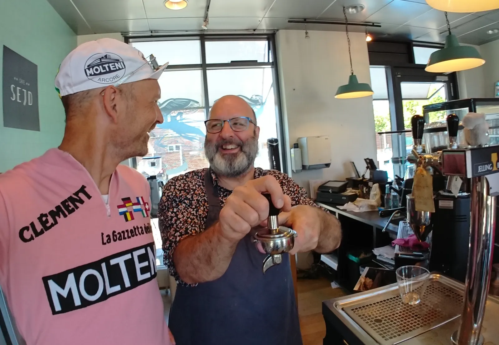

Molteni og Café Sejd i Tour-forhandlinger

Squadra Molteni og Café Sejd i Jelling er i øjeblikket konstruktive forhandlinger, det peger i retning af Tour de France 2021.
Attraktivt wildcard og legendarisk pølsefirma
Indehaveren af Café Sejd i Jelling, Bjarne Taudal, er udover at være verdens hyggeligste cafévært, espressospecialist og madaffectionist, også en mand med stor passion for cykelsportens historie.
Altså at få et samarbejde med Squadra Molteni står højt på min ønskeseddel, siger Bjarne Taudal.
Jeg er vild med dét hold. De hylder både cykelsportens historie – og samtidig kører de satans stærkt. Det er så vildt, at de allerede har fået et wildcard til Tour de France 2021. Og så er jeg jo også meget betaget af, at holdets hovedsponsor er det legendariske pølsefirma fra Acore.
Aperol Spritz og fortsatte forhandlinger
Hvad Squadra Molteni og Café Sejd konkret forhandler om, og hvad deres samarbejde kommer til at gå ud på, vil de endnu ikke løfte sløret for.
Jeg kan desværre ikke afsløre mere, end at både Squadra Molteni og Café Sejd arbejder på, at give hele Jelling en stor oplevelse, lyder det fra Kaptajn Bjørnsteen.
Bjarne Taudal kan tilføje, at der er planlagt yderligere forhandlinger på udvalgt sommeraftner over iskolde Aperol Spritz’s og måske en enkelt Sundowner.
Tour de France 2021 kører tre etaper i Danmark fra 2. – 4. juli. Tredje etape, 4. juli, har start i Vejle. Herfra går ruten ud til Jelling og tilbage til Vejle – for så at fortsætte sydpå til Sønderborg.
Det er altså ikke hver dag, at Jelling for besøg af et Tour de France – og et worldtourretrohold som Squadra Molteni, lyder det fra Cafeindehaver Bjarne Taudal, der selv engang i 70’erne kørte rundt på en italiensk fuldboldsracercykel med gedebukkestyr.

